Week 2 We started off this week by doing a warmup challenge where we each had a half pipe in hand and the objective was to get the marble through the pipes all the way into the bucket at the end. This was assigned to two groups half the class. This was very difficult, as we had to use teamwork in order to transport the pipes to the next team member. Next we had to design a tinkercad home appliance. We also worked on a group project.
Week 3 This week, we started off on Monday by doing a challenge with the class split up into two sides. The objective was that we had to lign up and we each had one pipe that we had to pass one marble through. This had to continue all the way until the marble went into the bucket at the end of the line. This was a very fun experience that had to use the combined creativity of your group. On Wednesday, we started to design our Rube Goldberg Machines. This was first supposed to be drawn on paper and then put together in tinkercad when finished. Finally, on Friday, we were supposed to bring an item from home to the class. Then we were supposed to design said item on tinkercad in which two judges picked their sides winner. The winner got a kit kat bar. I designed the eiffil tower, which is a very complicated piece to make with shapes as it is curved and has many different designs. At the end, Brandon won our sides contest with a design of a nintendo switch.
Week 4 On week 4, we started off by taking our Rube Goldberg projects from tinkercad and starting to design it. For our tools we got a large piece of cardboard. We also were able to use a ruler. This was all that was provided though. This was very difficult as we got off to a slow start because we did not know how to make the object 3D, but after we figured it out we actually got a small amount of work done. On Wednesday, we got box cutters in order to trace the designs that we were going to make and cut them out on the cardboard that we were given. This was a very hard process where I was working on the ground trying to cut the pieces as straight as possible. At the end we were able to almost finish taping everything together. On Friday, we had a challenge day. Our objective was to make a boat that would hold weight on it for 5 minutes. Our groups lasted the whole 5 minutes but only used minimal weight. The way to get the longest amount of time was to spread the base as big as possible.
Week 5 This whole week was dedicated as a work week. We starteed off on Monday by making very little progress on our project. We ran into a lot of trial and error during this portion as we needed to figure out how we were going to make the pully system functional. On Wednesday, it was an assembly sceduale and as the internet had failed the first time about 30 minutes into class, we only had a limited amount of time to work on our project. We got some stuff taped down including our lever mechanism and our pully system. Finally, on Friday we finished off whatever we had left on this project and tested it. The first time, the needle had hit the balloon but did not pop it. The second time though, it was a success, our project worked and our balloon popped. The following is a video showing our successful attempt: Week 6 On Week 6, we started off on monday by making sure that all of our websites were up to date and working perfectly. I ran into an issue where my video wasnt playing on my website. It was an easy fix and i just needed to add a code in order for it to actually play. After, on Wednesday, we started on a new project in which we had to dissect a computer. I was put in a group with Arman and Aren and I took control since I know a lot about computers and dissasembly. We got through taking apart the whole computer and labeling the parts. Finally on Friday, we had to put back together the whole computer which was complicated but we finished by the end of the period. Week 7 On Week 7, we started on Monday by just taking notes on the new lesson of engineering. That is all that we did for the whole period. Then, on Wednesday, we were told to research and write down on a google doc what animal prosthetic to design. We had to then get it checked by Ms. Petrosian and if it was good then we start designing it on tinkercad. I chose a duck beak prostethic that would be made from 3D print Plasic and would be put on with epoxy. Finally, on Friday, we were to research about engineering jobs and see what the requirments were for that job. We also did a PB and J sheet where we had to explain in full detail how to make a PB and J sandwich without missing a single step. This was very hard as there were things that I skipped over that I should have included. Week 8 On this week, we reviewed and continued to work on our prosthetics and finished that up. After, we needed to create a bottle rocket in tinkercad. It invovled a 2 liter bottle that we were to attach wings on and point the front. We are going to continue this project next week. Today we had to make a flying paper object that could hit a trashcan. The drawbacks were that we were limited to one piece of paper and we were on the second story of a building. Since I had never made a paper airplane, I was forced to rely on a youtube video and hope that it would work. I got to throwing it and instead of going forward, it ended up going backwards. This was because I threw it with too much force when i was to just glide it. Week 9 On week 9, our objective was to make a bottle rocket that looked unique. Our group had very different ideas at the start, which made us start from scratch. We thought about making more of a plane looking bottle rocket, so we started by cutting out a huge triangular cardboard and testing out to see if it would glide. Upon testing, we saw that it would nose dive pretty quickly. We decided that we would cut another piece out and make a sandwich between the bottle and the two pieces. On test day, we saw that the launcher wasnt at the angle that we wanted it to be at, and it ended up failing. Though, we had the best looking bottle rocket for sure. 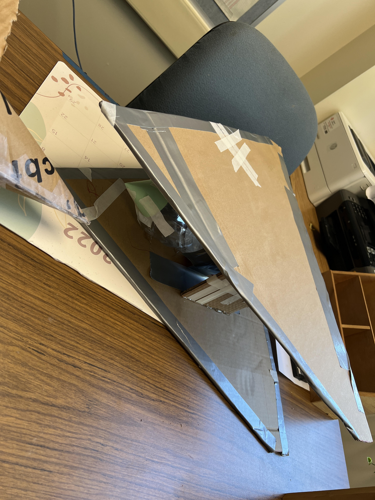 Week 10 On Week 10, We learned about environmental engineering. It was very interesting. In essence, they tidy up the mess that the other engineers create. We also did a challenge where we had to predict how many candy corns would fit on a piece of paper. The answer was 226 in total. We also tried to filter water using rocks, sand, and tissue. My group's water was the cleanest out of everybody's. Overall, this was a very fun experience that took many group members to figure out a solution. Week 11 On Week 11, on Monday we started the week off by learning about the Ohms Law and doing a worksheet on it. Next, we all started doing a lab in which we had to open up a circut on tinkercad and make a Parallel and Series circut. This was very difficult and I didn't understand how to complete the light activity. After a little explanation, I was able to complete it. As I was absent on Friday, it was difficult to complete this but at the end I got it done. This is a picture of my completed circuts: 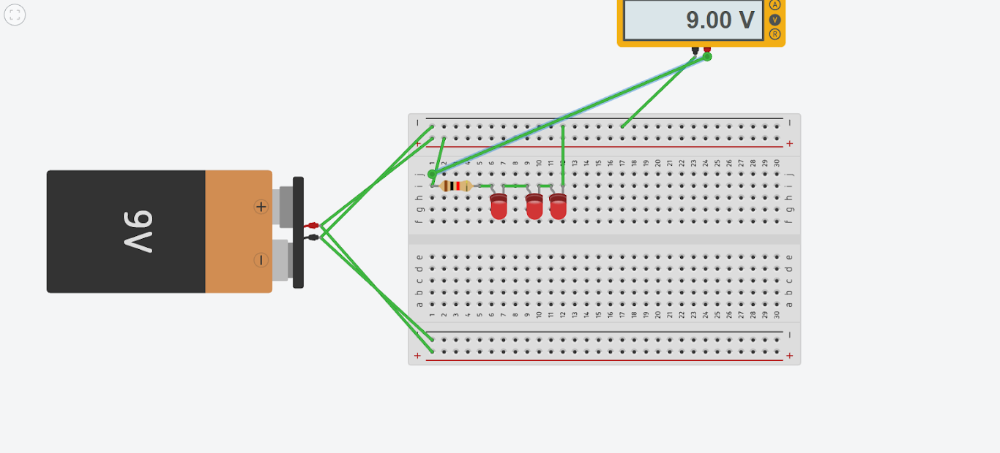 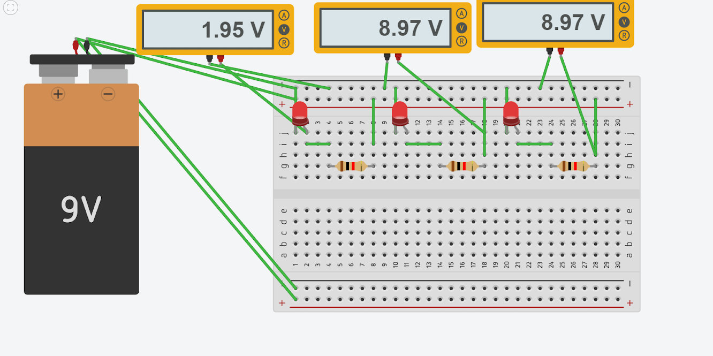 Week 12 On Week 12, we started off on Tuesday by doing a lab where we were given a breadboard, led's, and wires. The goal was to make a circut where the led light would actually turn on. This was very challenging for me and personally was nothing like the tinkercad. Me and my partner managed through it though, and answered all of the questions on the worksheet. Next, on Thursday, we did a challenge where we had to calculate how many hours it takes to count to a million and how many hours it takes to complete a math class and then choose which one we would want to do more. I chose the math class since it takes way less to complete. 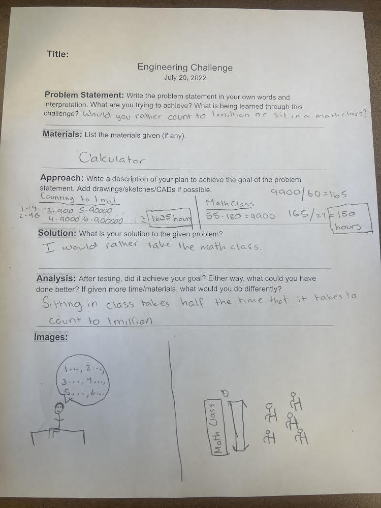 Week 13 On Week 13, On the electrical engineering, we kept working. This time, we discovered how to code the light's pattern. Trying out various designs and being inventive was quite fun. We had to decide whether the school should have more doors or wheels for the week's assignment. I was positioned beside the doors. I was in charge of counting all the 2nd building lockers. Our team ended up winning after a very heated discussion. Week 14 On Week 14, we are starting our studies in the topic of civil engineering, which, as we have learnt, includes a broad range of subfields. This includes anything from water management to seismic and stress analyses on items and building design. We were given a challenge in which our materials were 100 pieces of spagetti and wood glue. We are supposed to use a maximum of 20 pieces of spagetti in order to make a bridge that should be a minimum of 24 inches long and it has to be able to hold up a bucket. As this bucket is hanging from the spagetti, there will be water poured inside the bucket and our score will be based on how well the spagetti holds up before the bucket touches the ground. Im feeling pretty good about our chances since we have already tested our project. The following is a picture of the design that i made in tinkercad: 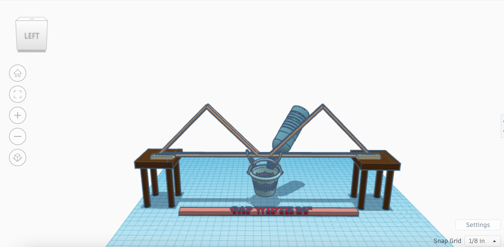 2nd Semester Week 1 On Week 1, we had to design an item for sharktank. My group decided to do a website called community. This website allows people around your area to post public events like parties and other things. I think that our group had the best and most useful item becase there is no such thing as this in an app so far. Overall it was a very fun and exciting experience and I had a really good time. Week 2 On Week 2, As part of a project in class, we had to make oobleck by combining water and corn starch. The substance got less dense as additional water was added. We tended to use a water to corn starch ratio of about 1:2. The oobleck would solidify more quickly the harder and faster it moved. Nevertheless, if it were inactive, the oobleck would turn liquid-like. Week 3 On Week 3, We started on a project in which we have to figure out how to design an arduino run car with a budget of about 100 dollars. We are supposed to make it functional. We decided to do this with a controller hooked up to 4 individual motors. Week 4 On Week 4, we continued the arduino car project where we now had to start designing the actual thing on tinkercad. We did a simple design with blocks representing the parts that we are going to use. Next, we were to start on putting together the actual car. We ran into some troubles though and are still trying to work around them. Project Arduino Struggles of my project were getting the code to run correctly. Right now we are troubleshooting the code and trying to put it all together before we start working on the body of the actual car. Some improvements that we have made are fixing the code to correctly spin the tires the right way on demand and to fix the wiring so that all of the wires fit on the board. Project Summary (google forms) My teams project was successful besides not being able to get a bluetooth module in because of time. Our coding and Arduino car were both successful and fully functional. We tried to make it as cable managed as we possibly could by adding zip ties and holes through the base. At first the motor was not functioning correctly and this was because of the amount of power that just a computer was outputting. This wasnt enough in order to move the two motors. We fixed this by attaching a battery straight to the arduino board. As we had to change it from the original tinkercad because of spacing issues, we ran into a few problems along the way, one of most was the coding which did not seem to want to work correctly. We changed the loctaion of the board and the battery to quickly fix this issue. We also ran into an issue about what design to make and the size of the tires. At first we had small tires which did not balance out the car. We fixed this by putting on bigger tires. We learned how to wire and code correctly in order for an arduino to run correctly on a code made entirely from scratch and also about weight distribution and how everything has to be correctly accounted for in order to get the most efficient results. 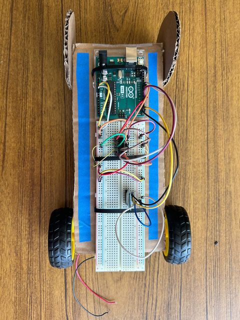 Boat Project (Week 9) 1. We were thinking of making a solid base with two balloons on top to cancel it from sinking, and then a sail on top. We were expecting the wind to carry it and to blow it to the finish. We expected this to carry it all the way to the end. 2. This project did not go as my group expected. The boat was too heavy because of the sail on top and nothing added in the front to support the boat. it ended up sinking right as we put it in the water and only went about 6 inches forward. 3. We would improve this project by balancing it out. We would take one of the balloons and switch it to the front so the base balances. Then we would take off the sail because of the added drag. Week 10 For our eggtoss project, we will be making a triangular object in order to shield it from moving any direction. We are then going to put 16 straws in order to absorb the impact of the ground. These will be set up diagnally all over the triangle. Our project is going to look like the following: 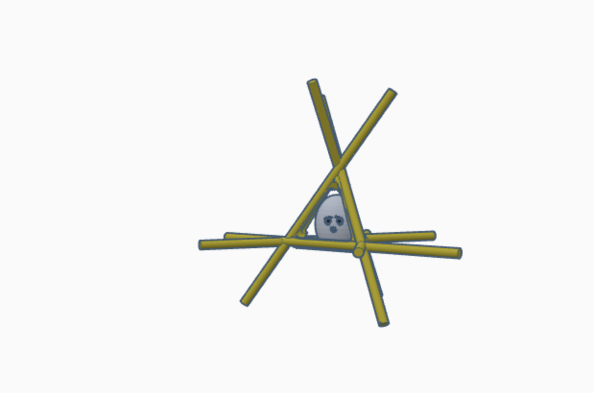 Week 11 We finished building our design for the egg drop challenge this week, and we got to test it out against the others. Even though we just used six pencils and a little tape in our design, we were still able to keep the egg safe when dropped from higher than the initial two stories. The build was a success, and the egg could be thrown multiple times without breaking. I think that this was a very good idea for design since the pencils, which covered the whole surface of the egg, absorbed all of the impact. Week 12 This week we started a new project where we have to build a life size boat. The challenge is to load 2 people in the boat and see who can cross to the other side of the pool. We decided that we are going to go for a simple design with a point at the end. There will be walls for added support so we dont fall out. We also will have 2 paddles in order to help the boat move forward. 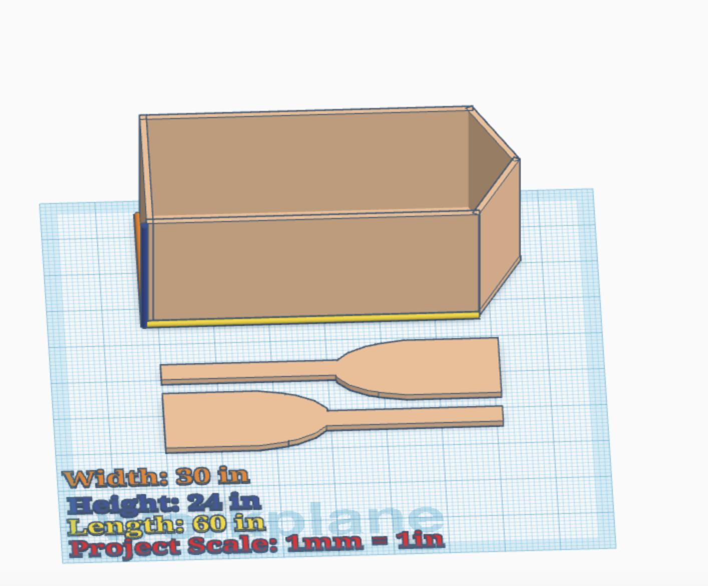 Week 13 This week, we continued to build our boat project. Some questions that came up were how we are going to reinforce the boat in order for it not to cave in. We also created a triangular shape at the end for it to be able to split through the water. We will add paddles in order for the two people in the boat to be able to move forward. I dont know yet how we will make this work but that is to be decided. Week 14 This week, we worked on cutting out the dimensions for the actual boat, getting together all of our pieces ready to tape next week. We also built a 1/5 prototype to test with bricks in the pool. While this doesnt really help us because of the volume difference between the two, it was cool seeing if our boat will stay up. Our only challenge was that since our dimensions for each wall were big, we had to use about 4 different pieces of cardboard in order to cut out the base and the walls. We will also be thinking of a way to counter the cardboard getting wet in the opening. Week 15 This week, we worked on putting together the boat project. The whole base, along with the point at the end is all cut out. We taped all the edges that are open in order for water not the seep inbetween and make it easier for the cardboard to sink. Working through this, we discovered new challenges that we are going to face and how we are going to counter it. One big problem is that the base is in two different pieces of carboard which will fold when weight is added onto it. We are thinking of putting a layer of tape at the top of the cardboard in order to further support it. Week 16 This week, we continued taping down our boat. We quickly realized that there was no way that there was going to be enough tape to finish what we wanted to accomplish which was to tape the whole bottom of the class. We then decided that we would start from both the right and the left sides of the bottom of the boat and go in to see how much we could cover. We made paddles for the boat too. Then, We realized that we needed way more support for the bottom of the boat. This was because we couldn't complete our original plan of taping the whole bottom. We took about 4 layers of cardboard and layed them out across the bottom inside our boat. This also helped renforce the walls and sides of our boat. Week 17 This week, we finished up our boat project. During this, we found ways to renforce our boat a bit more and took some of the layers out of the bottom of our boat and added them to the middle. We added support via a piece of cardboard in the middle of our boat to keep it from caving in. On Friday it was senior ditch day so i dont know what we did.
Week 6 On Week 6, we started off on monday by making sure that all of our websites were up to date and working perfectly. I ran into an issue where my video wasnt playing on my website. It was an easy fix and i just needed to add a code in order for it to actually play. After, on Wednesday, we started on a new project in which we had to dissect a computer. I was put in a group with Arman and Aren and I took control since I know a lot about computers and dissasembly. We got through taking apart the whole computer and labeling the parts. Finally on Friday, we had to put back together the whole computer which was complicated but we finished by the end of the period.
Week 7 On Week 7, we started on Monday by just taking notes on the new lesson of engineering. That is all that we did for the whole period. Then, on Wednesday, we were told to research and write down on a google doc what animal prosthetic to design. We had to then get it checked by Ms. Petrosian and if it was good then we start designing it on tinkercad. I chose a duck beak prostethic that would be made from 3D print Plasic and would be put on with epoxy. Finally, on Friday, we were to research about engineering jobs and see what the requirments were for that job. We also did a PB and J sheet where we had to explain in full detail how to make a PB and J sandwich without missing a single step. This was very hard as there were things that I skipped over that I should have included.
Week 8 On this week, we reviewed and continued to work on our prosthetics and finished that up. After, we needed to create a bottle rocket in tinkercad. It invovled a 2 liter bottle that we were to attach wings on and point the front. We are going to continue this project next week. Today we had to make a flying paper object that could hit a trashcan. The drawbacks were that we were limited to one piece of paper and we were on the second story of a building. Since I had never made a paper airplane, I was forced to rely on a youtube video and hope that it would work. I got to throwing it and instead of going forward, it ended up going backwards. This was because I threw it with too much force when i was to just glide it.
Week 9 On week 9, our objective was to make a bottle rocket that looked unique. Our group had very different ideas at the start, which made us start from scratch. We thought about making more of a plane looking bottle rocket, so we started by cutting out a huge triangular cardboard and testing out to see if it would glide. Upon testing, we saw that it would nose dive pretty quickly. We decided that we would cut another piece out and make a sandwich between the bottle and the two pieces. On test day, we saw that the launcher wasnt at the angle that we wanted it to be at, and it ended up failing. Though, we had the best looking bottle rocket for sure. 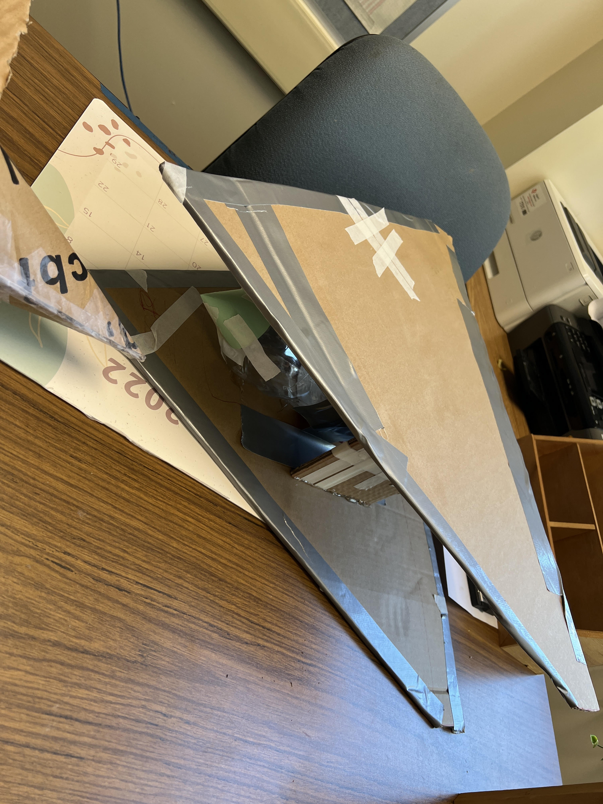
Week 10 On Week 10, We learned about environmental engineering. It was very interesting. In essence, they tidy up the mess that the other engineers create. We also did a challenge where we had to predict how many candy corns would fit on a piece of paper. The answer was 226 in total. We also tried to filter water using rocks, sand, and tissue. My group's water was the cleanest out of everybody's. Overall, this was a very fun experience that took many group members to figure out a solution.
Week 11 On Week 11, on Monday we started the week off by learning about the Ohms Law and doing a worksheet on it. Next, we all started doing a lab in which we had to open up a circut on tinkercad and make a Parallel and Series circut. This was very difficult and I didn't understand how to complete the light activity. After a little explanation, I was able to complete it. As I was absent on Friday, it was difficult to complete this but at the end I got it done. This is a picture of my completed circuts: 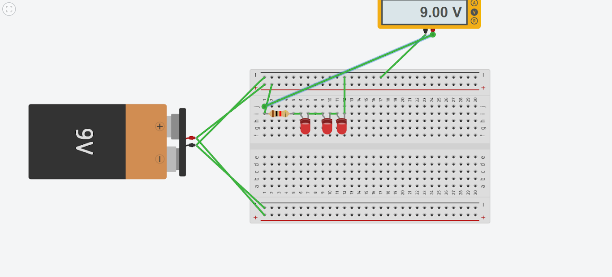 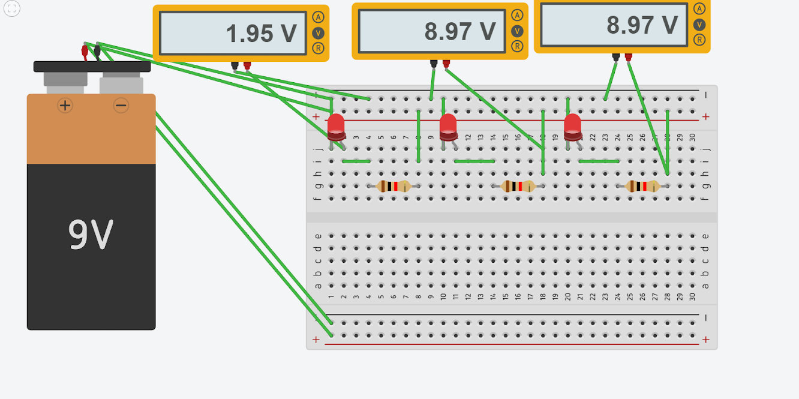
Week 12 On Week 12, we started off on Tuesday by doing a lab where we were given a breadboard, led's, and wires. The goal was to make a circut where the led light would actually turn on. This was very challenging for me and personally was nothing like the tinkercad. Me and my partner managed through it though, and answered all of the questions on the worksheet. Next, on Thursday, we did a challenge where we had to calculate how many hours it takes to count to a million and how many hours it takes to complete a math class and then choose which one we would want to do more. I chose the math class since it takes way less to complete. 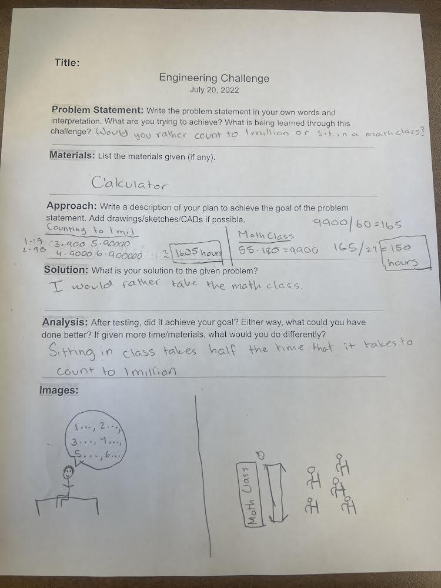 Week 13 On Week 13, On the electrical engineering, we kept working. This time, we discovered how to code the light's pattern. Trying out various designs and being inventive was quite fun. We had to decide whether the school should have more doors or wheels for the week's assignment. I was positioned beside the doors. I was in charge of counting all the 2nd building lockers. Our team ended up winning after a very heated discussion.
Week 14 On Week 14, we are starting our studies in the topic of civil engineering, which, as we have learnt, includes a broad range of subfields. This includes anything from water management to seismic and stress analyses on items and building design. We were given a challenge in which our materials were 100 pieces of spagetti and wood glue. We are supposed to use a maximum of 20 pieces of spagetti in order to make a bridge that should be a minimum of 24 inches long and it has to be able to hold up a bucket. As this bucket is hanging from the spagetti, there will be water poured inside the bucket and our score will be based on how well the spagetti holds up before the bucket touches the ground. Im feeling pretty good about our chances since we have already tested our project. The following is a picture of the design that i made in tinkercad: 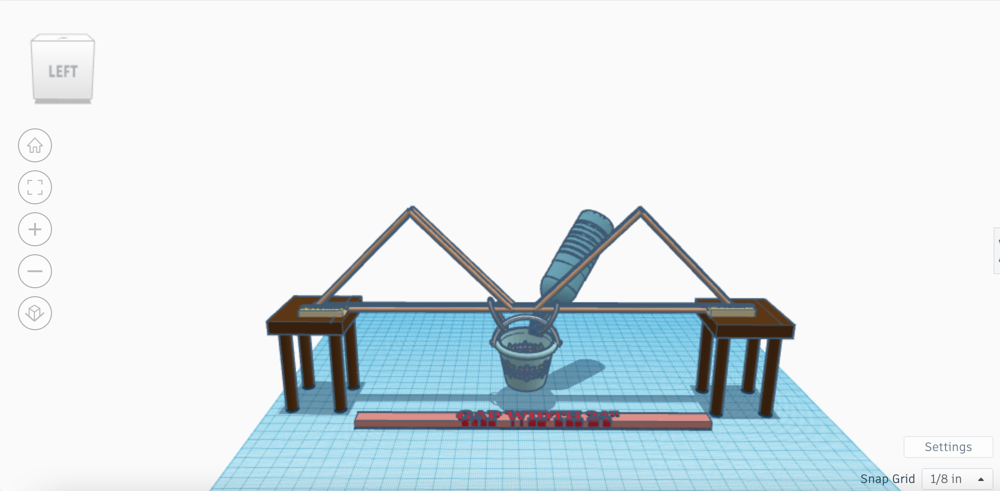
2nd Semester
Week 1 On Week 1, we had to design an item for sharktank. My group decided to do a website called community. This website allows people around your area to post public events like parties and other things. I think that our group had the best and most useful item becase there is no such thing as this in an app so far. Overall it was a very fun and exciting experience and I had a really good time.
Week 2 On Week 2, As part of a project in class, we had to make oobleck by combining water and corn starch. The substance got less dense as additional water was added. We tended to use a water to corn starch ratio of about 1:2. The oobleck would solidify more quickly the harder and faster it moved. Nevertheless, if it were inactive, the oobleck would turn liquid-like.
Week 3 On Week 3, We started on a project in which we have to figure out how to design an arduino run car with a budget of about 100 dollars. We are supposed to make it functional. We decided to do this with a controller hooked up to 4 individual motors.
Week 4 On Week 4, we continued the arduino car project where we now had to start designing the actual thing on tinkercad. We did a simple design with blocks representing the parts that we are going to use. Next, we were to start on putting together the actual car. We ran into some troubles though and are still trying to work around them.
Project Arduino Struggles of my project were getting the code to run correctly. Right now we are troubleshooting the code and trying to put it all together before we start working on the body of the actual car. Some improvements that we have made are fixing the code to correctly spin the tires the right way on demand and to fix the wiring so that all of the wires fit on the board.
Project Summary (google forms) My teams project was successful besides not being able to get a bluetooth module in because of time. Our coding and Arduino car were both successful and fully functional. We tried to make it as cable managed as we possibly could by adding zip ties and holes through the base. At first the motor was not functioning correctly and this was because of the amount of power that just a computer was outputting. This wasnt enough in order to move the two motors. We fixed this by attaching a battery straight to the arduino board. As we had to change it from the original tinkercad because of spacing issues, we ran into a few problems along the way, one of most was the coding which did not seem to want to work correctly. We changed the loctaion of the board and the battery to quickly fix this issue. We also ran into an issue about what design to make and the size of the tires. At first we had small tires which did not balance out the car. We fixed this by putting on bigger tires. We learned how to wire and code correctly in order for an arduino to run correctly on a code made entirely from scratch and also about weight distribution and how everything has to be correctly accounted for in order to get the most efficient results. 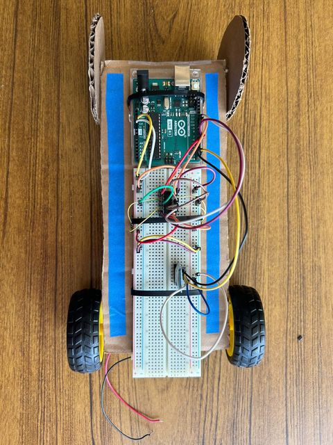
Boat Project (Week 9) 1. We were thinking of making a solid base with two balloons on top to cancel it from sinking, and then a sail on top. We were expecting the wind to carry it and to blow it to the finish. We expected this to carry it all the way to the end. 2. This project did not go as my group expected. The boat was too heavy because of the sail on top and nothing added in the front to support the boat. it ended up sinking right as we put it in the water and only went about 6 inches forward. 3. We would improve this project by balancing it out. We would take one of the balloons and switch it to the front so the base balances. Then we would take off the sail because of the added drag.
Week 10 For our eggtoss project, we will be making a triangular object in order to shield it from moving any direction. We are then going to put 16 straws in order to absorb the impact of the ground. These will be set up diagnally all over the triangle. Our project is going to look like the following: 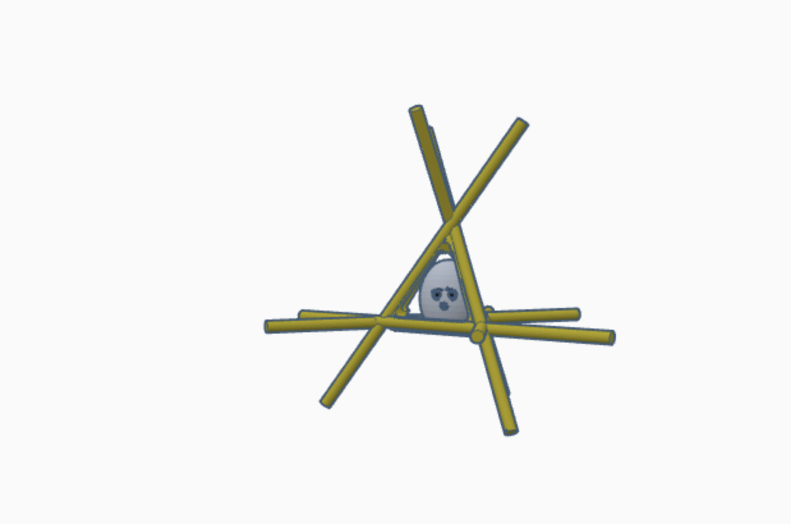
Week 11 We finished building our design for the egg drop challenge this week, and we got to test it out against the others. Even though we just used six pencils and a little tape in our design, we were still able to keep the egg safe when dropped from higher than the initial two stories. The build was a success, and the egg could be thrown multiple times without breaking. I think that this was a very good idea for design since the pencils, which covered the whole surface of the egg, absorbed all of the impact.
Week 12 This week we started a new project where we have to build a life size boat. The challenge is to load 2 people in the boat and see who can cross to the other side of the pool. We decided that we are going to go for a simple design with a point at the end. There will be walls for added support so we dont fall out. We also will have 2 paddles in order to help the boat move forward. 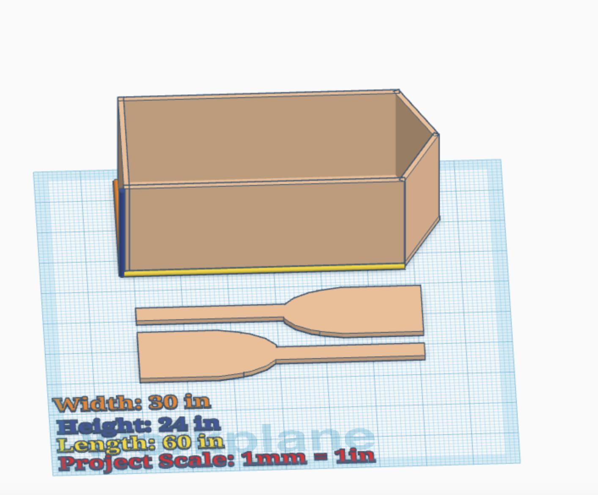
Week 13 This week, we continued to build our boat project. Some questions that came up were how we are going to reinforce the boat in order for it not to cave in. We also created a triangular shape at the end for it to be able to split through the water. We will add paddles in order for the two people in the boat to be able to move forward. I dont know yet how we will make this work but that is to be decided.
Week 14 This week, we worked on cutting out the dimensions for the actual boat, getting together all of our pieces ready to tape next week. We also built a 1/5 prototype to test with bricks in the pool. While this doesnt really help us because of the volume difference between the two, it was cool seeing if our boat will stay up. Our only challenge was that since our dimensions for each wall were big, we had to use about 4 different pieces of cardboard in order to cut out the base and the walls. We will also be thinking of a way to counter the cardboard getting wet in the opening.
Week 15 This week, we worked on putting together the boat project. The whole base, along with the point at the end is all cut out. We taped all the edges that are open in order for water not the seep inbetween and make it easier for the cardboard to sink. Working through this, we discovered new challenges that we are going to face and how we are going to counter it. One big problem is that the base is in two different pieces of carboard which will fold when weight is added onto it. We are thinking of putting a layer of tape at the top of the cardboard in order to further support it.
Week 16 This week, we continued taping down our boat. We quickly realized that there was no way that there was going to be enough tape to finish what we wanted to accomplish which was to tape the whole bottom of the class. We then decided that we would start from both the right and the left sides of the bottom of the boat and go in to see how much we could cover. We made paddles for the boat too. Then, We realized that we needed way more support for the bottom of the boat. This was because we couldn't complete our original plan of taping the whole bottom. We took about 4 layers of cardboard and layed them out across the bottom inside our boat. This also helped renforce the walls and sides of our boat.
Week 17 This week, we finished up our boat project. During this, we found ways to renforce our boat a bit more and took some of the layers out of the bottom of our boat and added them to the middle. We added support via a piece of cardboard in the middle of our boat to keep it from caving in. On Friday it was senior ditch day so i dont know what we did.